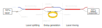
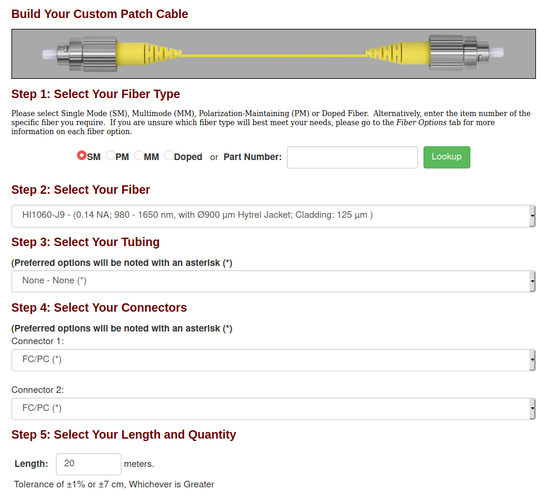
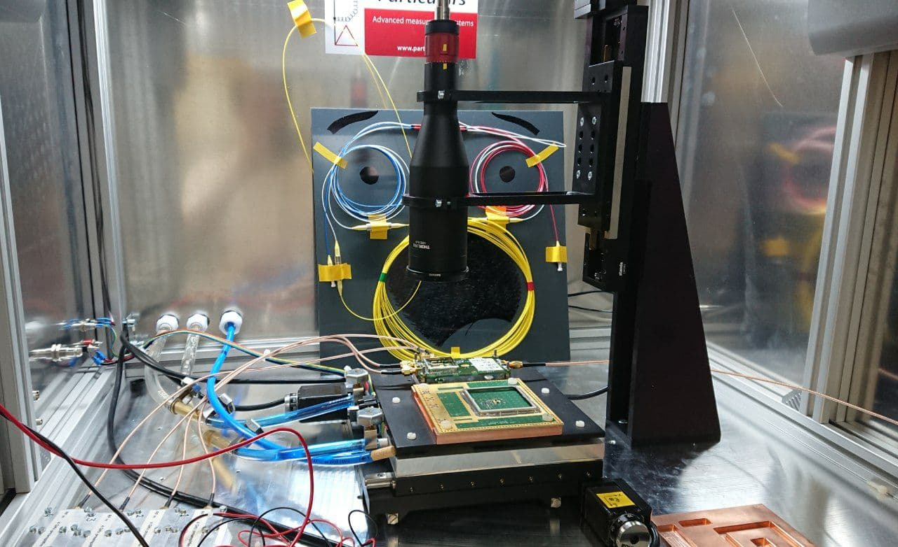
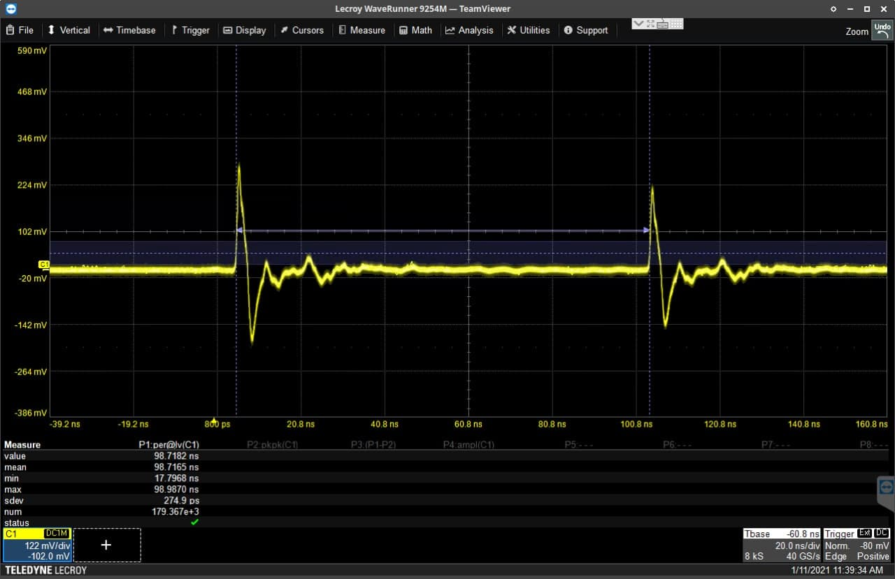

We have in our lab a scanning TCT by Particulars which produces laser pulses. We want to do timing measurements with this so we need a time reference and a pulse. The best condition for this would be to have two separate laser pulses shifted in time by a fixed delay. One way to ensure that this delay is always the same for all of the pulses is to split the original pulse in two and then produce the delay by making one of the pulses to travel a longer distance. So today I assembled in the lab a system that implements such a delay method.
This is a scheme of the system that I assembled:
From left to right: the laser comes out from the TCT, it enters into a laser splitter which produces two identical pulses with 50 % of the energy each, then one of the pulses travels to a mixer and the other pulse travels through a “long” delay line before it reaches the mixer. Finally the two pulses are mixed back together into the same fiber and sent to the TCT again.
The components we bought all to Thorlabs and can be found below:
| Element | Code | Quantity |
|---|---|---|
| Laser splitter/mixer | TN1064R5F2A | 2 units |
| Delay optic fiber | NaN (see below) | 20 meters |
| Connector | ADAFC1 | 4 units |
For the optic fiber delay line I used the Custom Cable Configurator with the following input:
When it arrived, the optic fiber had the following label:
To calculate the length of the optic fiber I used the approximation that the speed of light inside the fiber is approximately two thirds that of vacuum. Thus $$\text{Delay optic fiber length} = \frac{2c}{3}\Delta t$$ where $c \approx 3 \times 10^8 \text{ m s}^{-1}$ and $\Delta t$ is the desired delay time. In my case $\Delta t = 100 \text{ ns}$ so the length of the fiber is 20 m.
The assembly of the system is almost trivial. The only precaution to have is to be very careful when handling the fibers because they are too thin. Below there are two pictures of the system assembled outside the TCT and finally installed inside the TCT with all the connections made:
At a first glance, the system is behaving as expected. In the image below we see two pulses coming out from an AC-LGAD detector each corresponding to each of the two laser pulses. The delay time between the two pulses is $\Delta t \approx 98.7 \text{ ns}$ as designed. The system was no further characterized yet.
